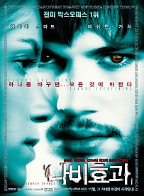
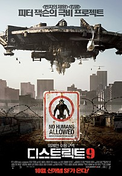
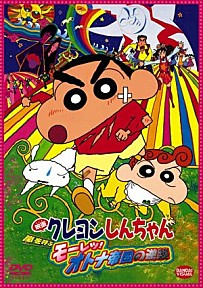
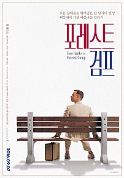

이름 : 헤나
사는 곳 : 드넓은 들판
자기소개 : 안녕하세요 ? 헤나입니다 😁
| 순위 | 제목 | 포스터 | 줄거리 | 바로가기 |
|---|---|---|---|---|
| 5 | 나비효과 |  | {나비의 날개 짓이 지구 반대편에선 태풍을 일으킬 수도 있다. - 카오스 이론} 끔찍한 어린 시절의 상처를 지닌 에반. 그에게 남은 것은 기억의 파편들과 상처입은 친구들. 에반은 과거의 기억을 되살리기 위해 정신과 치료를 받으며 어릴 적부터 매일매일 꼼꼼하게 일기를 쓴다. 그러나 과거를 바꿀수록 더욱 충격적인 현실만이 그를 기다릴 뿐, 현재는 전혀 예상치 못한 파국으로 치닫는데 과연 그는 과거를 바꿔 그가 원하는 현재를 이룰 수 있을 것인가? 아니면 불행한 현재에 영원히 갇혀버릴 것인가? | 바로가기 |
| 4 | 디스트릭트9 |  | 외계인 관람금지 남아공 상공에 불시착한 외계인들은 요하네스버그 인근 지역 외계인 수용구역 ‘디스트릭트 9’에 임시 수용된 채 28년 동안 인간의 통제를 받게 된다. 외계인 관리국 MNU는 외계인들로 인해 무법지대로 변해버린 ‘디스트릭트 9’을 강제 철거하기로 결정하고, 프로젝트를 추진하던 중 책임자 비커스가 외계물질에 노출되는 사고를 당한다. 유전자 변이를 일으키면서 외계인으로 변해가는 비커스. 정부는 비커스가 외계 신무기를 가동시킬 수 있는 유일한 인물이라는 것을 알고 비밀리에 그를 추적하기 시작한다. 정부의 감시시스템이 조여오는 가운데, 비커스는 외계인 수용 구역 ‘디스트릭트 9’으로 숨어드는데… | 바로가기 |
| 3 | 짱구 어른 제국의 역습 |  | 어른들과의 아이들의 전쟁이 코믹하게 그려지는 시리즈 9번째 작품 20세기를 그리워하는 사람이 현재의 21세기 일본은 감정도 없고 메마른 곳이라며 현재의 일본을 20세기 되돌려 놓으려한다. 그래서 짱구네 가족이 자신들의 미래를 찾기 위해 이를 막아내고 다시 일본은 원래대로 돌아온다는 이야기. | 바로가기 |
| 2 | 포레스트 검프 |  | '인생은 초콜릿 상자와 같은 거야. 네가 무엇을 고를지 아무도 모른단다…' 불편한 다리, 남들보다 조금 떨어지는 지능을 가진 외톨이 소년 ‘포레스트 검프’ 헌신적이고 강인한 어머니의 보살핌과 콩깍지 첫사랑 소녀 ‘제니’와의 만남으로 사회의 편견과 괴롭힘 속에서도 따뜻하고 순수한 마음을 지니고 성장한다. 여느 날과 같이 또래들의 괴롭힘을 피해 도망치던 포레스트는 누구보다 빠르게 달릴 수 있는 자신의 재능을 깨닫고 늘 달리는 삶을 살아간다. 포레스트의 재능을 발견한 대학에서 그를 미식축구 선수로 발탁하고, 졸업 후에도 뛰어난 신체능력으로 군에 들어가 누구도 예상치 못한 성과를 거둬 무공훈장을 수여받는 등 탄탄한 인생 가도에 오르게 된 포레스트. 하지만 영원히 행복할 것만 같았던 시간도 잠시, 어머니가 병에 걸려 죽음을 맞이하고 첫사랑 제니 역시 그의 곁을 떠나가며 다시 한번 인생의 전환점을 맞이하게 되는데… 과연, 포레스트는 진정한 삶의 행복을 발견할 수 있을까? 진정한 삶의 가치와 의미를 제시하는 감동 바이블! 올 가을, 다시 한번 세상에서 가장 눈부신 달리기가 시작된다! “Run! Forrest Run!” | 바로가기 |
| 1 | 빅피쉬 | “때로는 초라한 진실보다 환상적인 거짓이 더 나을 수도 있단다. 더구나 그것이 사랑에 의한 것이라면!” 운명을 보는 마녀, 집채만 한 거인, 시간이 멈춘 유령마을까지… 믿을 수 없는 모험으로 가득한 에드워드 블룸의 이야기. 당신도 믿나요? 아버지가 위독하다는 소식에 고향을 찾은 윌. 죽음을 목전에 두고도 다 큰 아들에게 허풍 가득한 무용담을 늘어놓는 아버지. 그의 레퍼토리는 언제나 기상천외한 모험과 단 하나의 로맨스로 이어진다. 이제, 믿기 힘든 이야기 속에 가려진 아버지의 진짜 모습을 마주하는데… | 바로가기 |